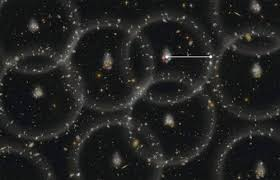

Baryon Acoustic Oscillations

Background
In the very early universe, matter and radiation were in thermal equilibrium — a hot, dense plasma. Gravity pulled matter together, but radiation pressure pushed back, launching acoustic (sound) waves through the plasma. These waves propagated at roughly half the speed of light, until the universe cooled enough for electrons and protons to combine into neutral hydrogen (an event called recombination, around 380,000 years after the Big Bang). At that moment, the radiation decoupled from the matter, the restoring pressure vanished, and the sound waves froze in place.
The distance a sound wave could travel before recombination — the sound horizon, $r_s \approx 150$ Mpc — is imprinted as a preferred clustering scale in the distribution of galaxies today. In the galaxy two-point correlation function, it appears as a prominent bump at $\sim 150$ Mpc separation. In the power spectrum, it appears as a series of oscillations. This scale is known with exquisite precision from CMB observations, making it a powerful standard ruler: by measuring the apparent size of this feature at different redshifts in galaxy surveys, we can map the expansion history of the universe and constrain dark energy.
The multipole expansion of the galaxy power spectrum in redshift space — the monopole $P_0$, quadrupole $P_2$, and hexadecapole $P_4$ — captures both the BAO signal and the imprint of galaxy motions (redshift-space distortions). While most analyses use only the first two multipoles, the hexadecapole $P_4$ contains additional information about the anisotropy of clustering and provides a valuable cross-check on the robustness of the results.
My Work
For the DESI DR2 BAO key paper, I performed a set of validation tests focused on including the hexadecapole ($P_4$) measurements in the multipole fits. Standard BAO analyses use only the monopole and quadrupole; including $P_4$ tests whether the results are stable against this extension and whether any additional cosmological information can be extracted. These validation checks are an essential part of the internal review process that DESI collaboration papers go through before publication, ensuring the robustness of the published BAO constraints.